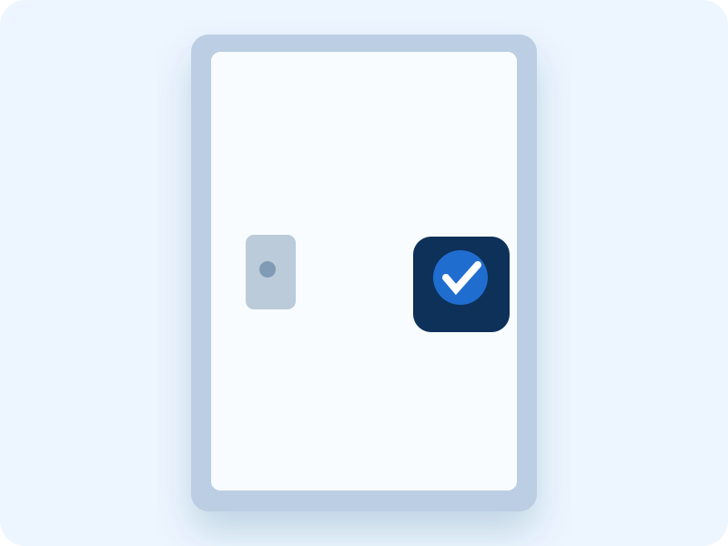

EXAMPLE 01
Smartphone unlocking
The phone checks your new scan against a template you previously enrolled. A match allows access. The match is normally handled by the device's protected security system.

EXAMPLE 02
Secure access
At a workplace or restricted room, the scanner searches the enrolled records. If the person is authorized, the system can permit entry.

EXAMPLE 03
Attendance systems
An enrolled fingerprint can be linked to an employee or student ID. When the system finds a match, it records the event under that ID and can save the time.